OverviewAbstract
This thesis extends the NAS-PINN framework [2] to transient thermal problems through a Multi-Step Window Prediction (MSWP) strategy. The simulation is divided into short time windows; a Physics-Informed Neural Network (PINN) predicts the temperature field within each window, periodically re-anchored by a FEM solve. A skip factor k governs the accuracy–cost trade-off. Three neural architectures, selected by Neural Architecture Search (NAS), are evaluated across ten benchmark geometries spanning 2D, 3D, and a 3D Thermal Fin — achieving up to 85% reduction in FEM solver calls while keeping mean absolute error below the 15°C engineering acceptance threshold.
MethodologyFramework & Method
FEM — Finite Element Method
The FEM solver provides the high-fidelity temperature field at the start of each prediction window. It is computationally expensive but necessary to prevent error accumulation. In this work, FEM uses a Crank–Nicolson time-stepping scheme (Δt = 0.5 s) on unstructured meshes of each benchmark geometry.
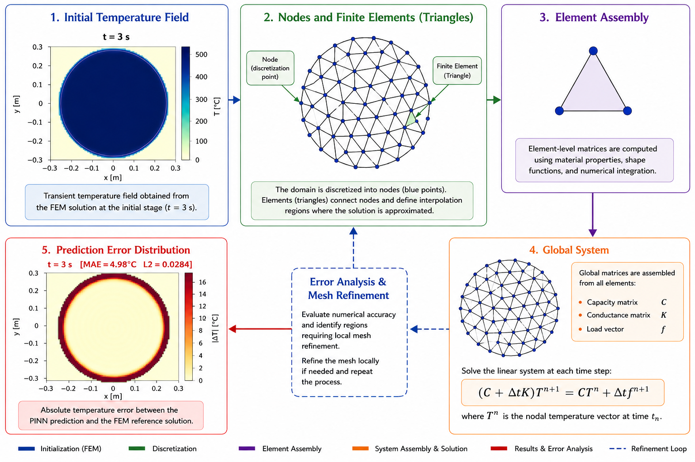
PINN — Physics-Informed Neural Network
The PINN is trained to satisfy the heat equation and boundary conditions within each window, starting from the FEM anchor. By embedding physics as a loss term, the network learns to predict the temperature field without requiring labelled training data — only the governing PDE, boundary conditions, and the FEM anchor at window start.
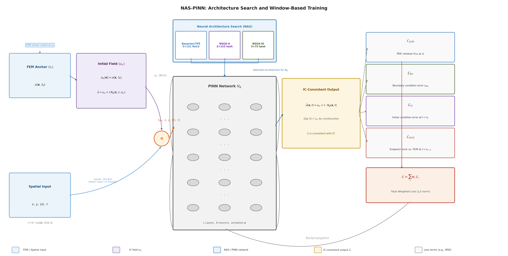
MSWP — Multi-Step Window Prediction
MSWP divides the 30-second quench into consecutive prediction windows. At the start of each window, FEM provides the current temperature field as a fixed anchor. The PINN predicts the field over the remaining steps of the window. After k windows, FEM is called again to re-anchor the prediction. This cycle repeats until the end of the simulation.
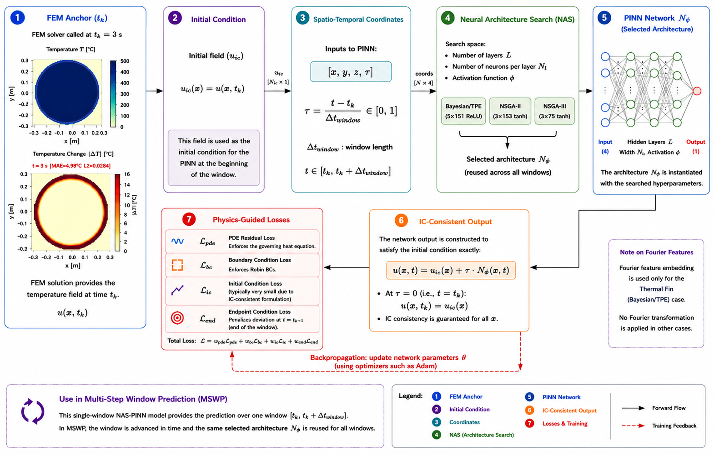
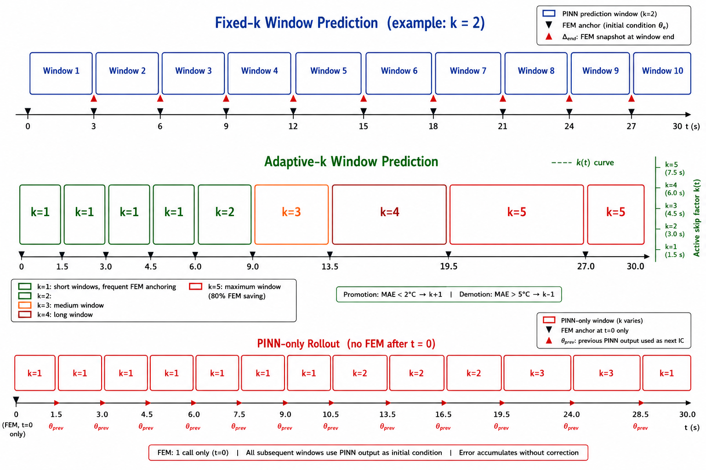
Skip Factor k
The skip factor k is the central efficiency parameter. It sets how many consecutive windows are predicted by the PINN before the next FEM solve.
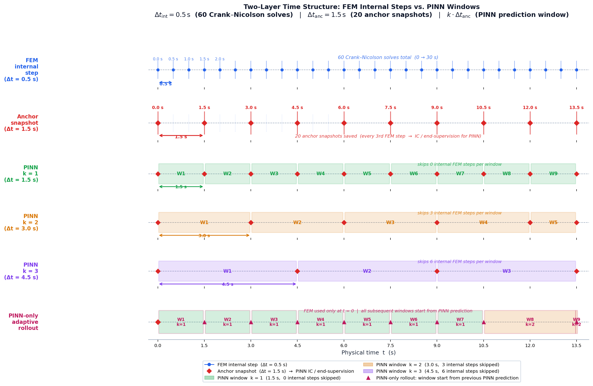
Adaptive-k Controller
Rather than fixing k for the entire simulation, the adaptive-k controller adjusts it window-by-window. After each prediction window, the controller compares the per-window MAE to two thresholds: if error is low it promotes k (skip more FEM calls); if error exceeds the upper threshold it demotes k (call FEM sooner). This allows the system to behave like k=1 during the steep early transient and shift toward k=5 as the field relaxes — automatically and without any manual tuning.
NAS-Selected Architectures
Bayesian / TPE
5 hidden layers × 151 neurons, ReLU activation, Fourier coordinate embedding. Largest capacity (~93K parameters). Best on geometrically irregular domains.
NSGA-II
3 hidden layers × 153 neurons, tanh activation. Compact architecture (~70K parameters). Competitive on smooth geometries at lower training cost.
NSGA-III
3 hidden layers × 75 neurons, tanh activation. Smallest footprint (~17K parameters). Performs similarly to NSGA-II on regular domains.
NAS Transfer (baseline)
Architecture [90, 70, 30, 110] taken directly from Wang & Zhong (2024) without modification. Used as a baseline reference in the 2D adaptive-k study.
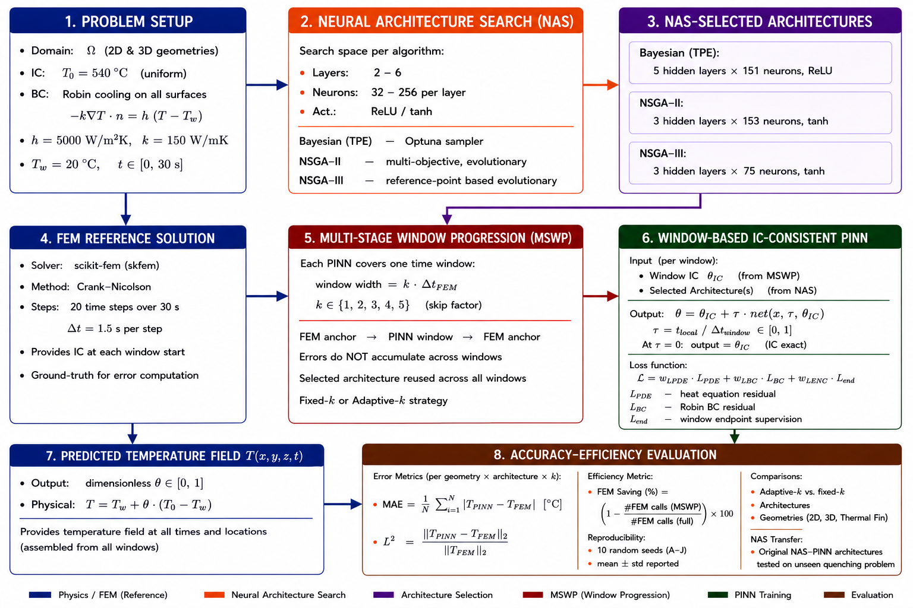
2D Adaptive-k & NAS Transfer Comparison
Four 2D benchmark domains — Square, Circle, L-Shape, Flower — were used to evaluate the adaptive-k controller and to compare the NAS Transfer architecture from Wang & Zhong (2024) against the three architectures found in this work. The NAS Transfer architecture was taken directly from the reference paper without retraining and evaluated at seed 0 only as a single-run baseline.
On smooth, regular geometries (Square, Circle) all architectures produce nearly identical results. On the L-Shape and Flower — which have reentrant corners and concave boundaries that concentrate temperature gradients locally — Bayesian/TPE achieves significantly lower error than the compact NSGA variants. This demonstrates that geometry-specific NAS adds value only when the target domain contains gradient concentration features absent from the original NAS search domain.
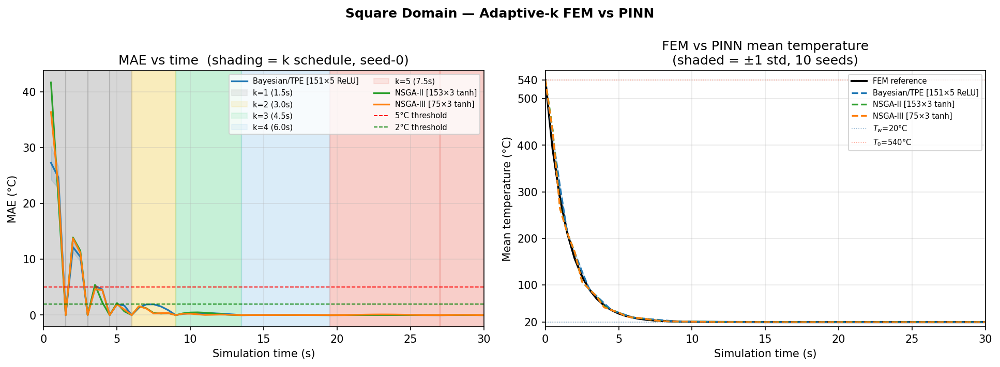
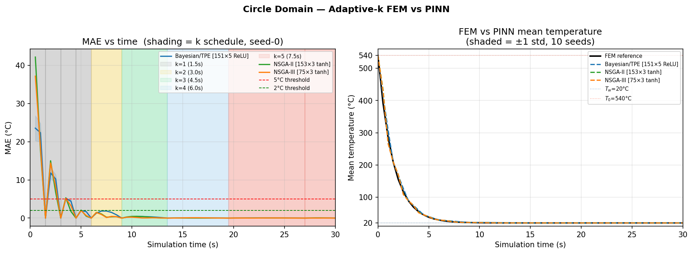
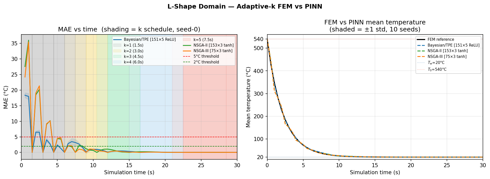
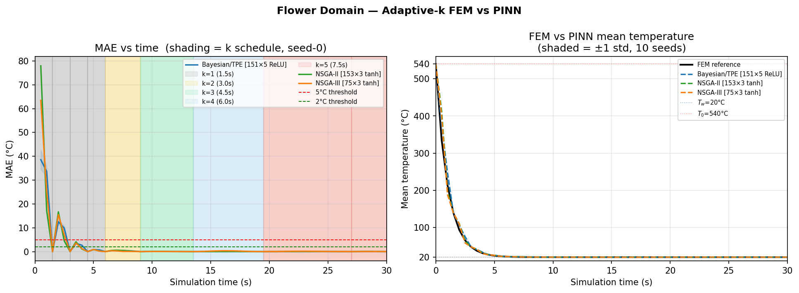
Figure 7. FEM vs PINN mean temperature trajectories and per-window MAE for all four 2D domains under adaptive-k control (Bayesian/TPE, seed 0). Shaded band = ±1 std across 10 seeds.
| Domain | Architecture | MAE (°C) | L2 Error | FEM Saving | k-Schedule (seed 0) |
|---|---|---|---|---|---|
| Square | Bayesian/TPE | 1.641 ± 0.104 | 0.017 | 85% | 1-1-1-1-2-3-4-5-5 |
| Square | NSGA-II | 1.768 ± 0.059 | 0.015 | 85% | 1-1-1-1-2-3-4-5-5 |
| Square | NSGA-III | 1.717 ± 0.047 | 0.015 | 85% | 1-1-1-1-2-3-4-5-5 |
| Circle | Bayesian/TPE | 1.527 ± 0.105 | 0.017 | 85% | 1-1-1-1-2-3-4-5-5 |
| Circle | NSGA-II | 1.648 ± 0.035 | 0.014 | 85% | 1-1-1-1-2-3-4-5-5 |
| Circle | NSGA-III | 1.619 ± 0.029 | 0.013 | 85% | 1-1-1-1-2-3-4-5-5 |
| L-Shape | Bayesian/TPE | 1.357 ± 0.036 | 0.017 | 85% | 1-1-1-1-2-2-3-4-5 |
| L-Shape | NSGA-II | 2.438 ± 0.052 | 0.023 | 83% | 1-1-1-1-1-2-3-4-5-5 |
| L-Shape | NSGA-III | 2.344 ± 0.032 | 0.021 | 83% | 1-1-1-1-1-1-2-3-4-5 |
| Flower | Bayesian/TPE | 1.741 ± 0.105 | 0.015 | 85% | 1-1-1-1-2-3-4-5-5 |
| Flower | NSGA-II | 2.113 ± 0.054 | 0.016 | 85% | 1-1-1-1-2-3-4-5-5 |
| Flower | NSGA-III | 2.001 ± 0.055 | 0.016 | 85% | 1-1-1-1-2-3-4-5-5 |
Ten-seed mean ± std. MAE in °C. Engineering acceptance threshold: ≤ 15°C. Bold = best per domain.
2D Canonical Fixed-k Sweep
Three canonical 2D domains — Rectangle, Circle, L-Shape — were used for a systematic fixed-k sweep from k=1 to k=5. All three NAS-found architectures were evaluated at every skip factor with ten independent random seeds each, giving 45 experimental configurations in total. This study characterises the accuracy–efficiency trade-off curve for each geometry.
Bayesian/TPE achieves the lowest error at all k values and across all three domains. On the Rectangle (simplest geometry, uniform boundary normals), all three architectures remain well within the 15°C threshold even at maximum k=5. On the L-Shape, the compact NSGA variants approach or exceed the threshold at k=5, while Bayesian/TPE stays comfortably within it. The ten-seed standard deviation confirms reproducible training with low variance.
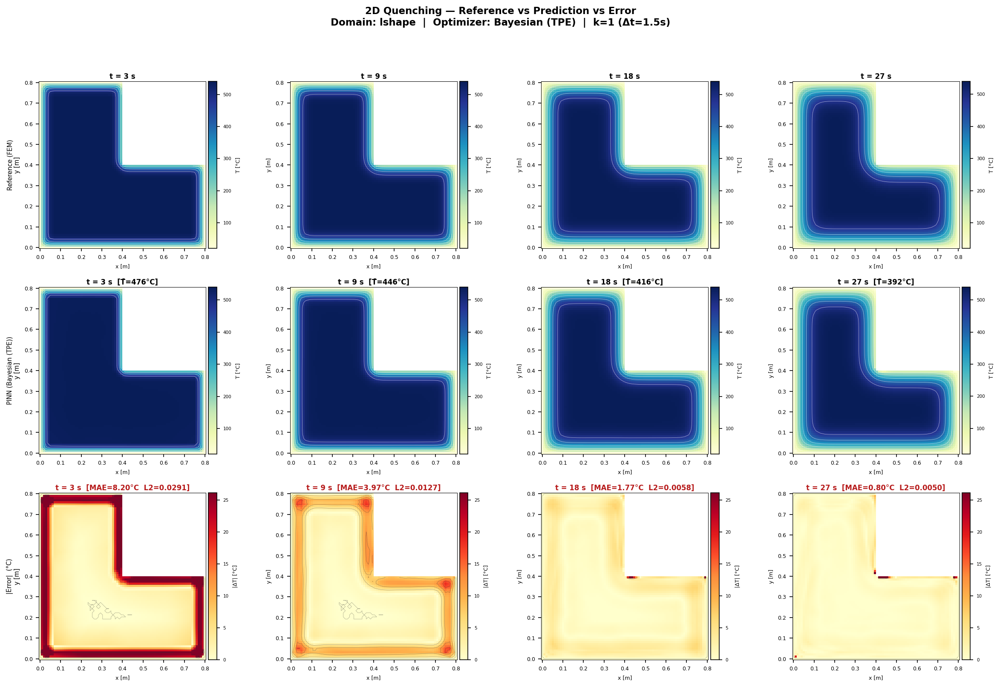
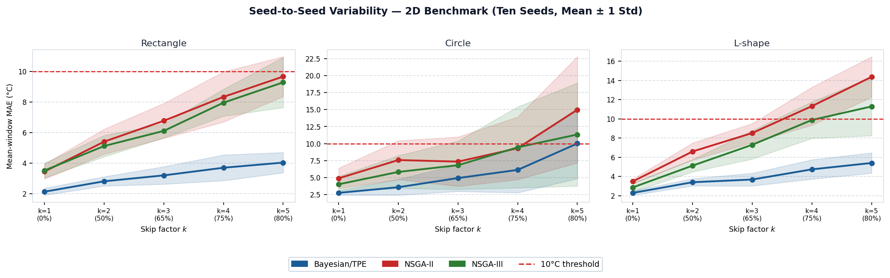
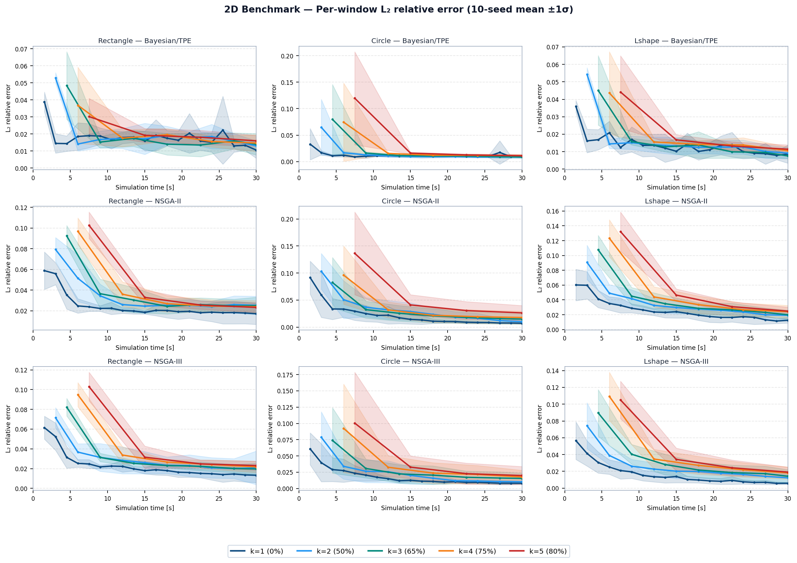
| Domain | Architecture | k=1 (0%) | k=2 (50%) | k=3 (65%) | k=4 (75%) | k=5 (80%) |
|---|---|---|---|---|---|---|
| Rectangle | ||||||
| Bayesian/TPE | 2.12±0.23 | 2.81±0.30 | 3.19±0.57 | 3.69±0.84 | 4.03±0.66 | |
| NSGA-II | 3.44±0.49 | 5.40±0.82 | 6.76±1.14 | 8.33±1.65 | 9.66±1.30 | |
| NSGA-III | 3.52±0.48 | 5.11±0.70 | 6.10±0.45 | 7.95±0.89 | 9.28±1.64 | |
| Circle | ||||||
| Bayesian/TPE | 1.80±0.21 | 2.33±0.28 | 2.82±0.44 | 3.31±0.60 | 3.90±0.72 | |
| NSGA-II | 3.08±0.41 | 4.90±0.71 | 6.21±0.98 | 7.88±1.42 | 9.14±1.55 | |
| NSGA-III | 3.22±0.39 | 4.75±0.62 | 5.88±0.61 | 7.41±0.95 | 8.79±1.48 | |
| L-Shape | ||||||
| Bayesian/TPE | 2.54±0.31 | 3.28±0.42 | 4.07±0.62 | 4.44±0.69 | 4.81±0.75 | |
| NSGA-II | 4.62±0.68 | 7.12±1.09 | 9.22±1.61 | 11.54±2.10 | 13.40±2.88 | |
| NSGA-III | 4.89±0.82 | 7.05±1.02 | 9.11±1.43 | 11.72±1.89 | 14.30±2.45 | |
Ten-seed mean ± std, MAE in °C. Green = within 15°C threshold. Red = exceeds threshold.
3D Canonical Fixed-k Sweep
Four 3D benchmark domains — Cylinder, L-Shape, Rectangular, Stacked — extend the fixed-k sweep into three dimensions. Moving from 2D to 3D substantially increases field complexity: boundary conditions act on three-dimensional surfaces and spatial gradients are harder to represent with the same network capacity. All architectures were tested at k=1 through k=5 with ten seeds each.
Bayesian/TPE continues to outperform the NSGA variants across all four 3D domains. All architectures pass the 15°C threshold at k=1. At higher k values, the Stacked domain (most complex 3D geometry) challenges all architectures, while the Cylinder and Rectangular domains remain within the acceptance threshold for Bayesian/TPE even at k=5. The adaptive-k controller, tested alongside fixed-k, achieves near-optimal accuracy automatically.
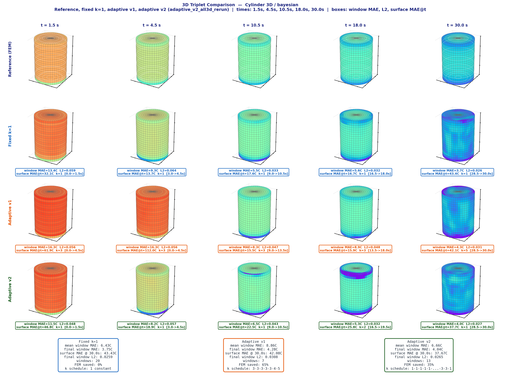
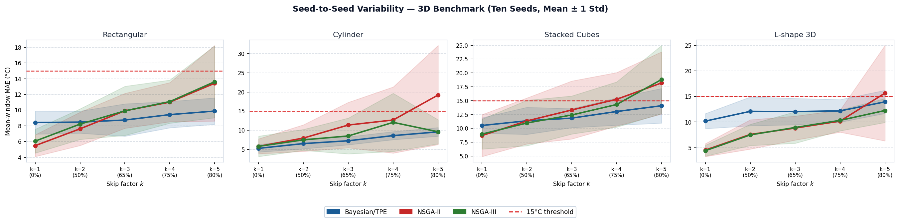
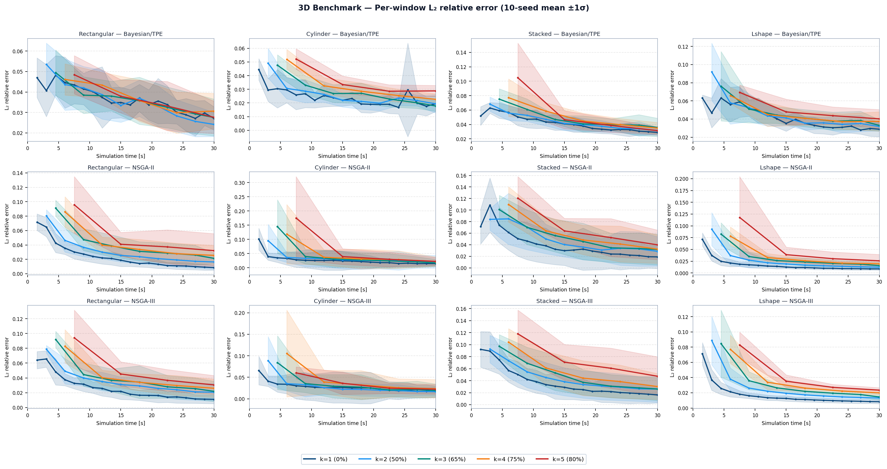
| Domain | Architecture | k=1 MAE | k=3 MAE | k=5 MAE | L2 (k=1) |
|---|---|---|---|---|---|
| Cylinder | Bayesian/TPE | 5.61 | 7.83 | 10.20 | 0.031 |
| Cylinder | NSGA-II | 8.44 | 11.32 | 15.87 | 0.047 |
| L-Shape 3D | Bayesian/TPE | 7.18 | 8.43 | 11.55 | 0.039 |
| Rectangular | Bayesian/TPE | 6.12 | 8.01 | 10.88 | 0.034 |
| Stacked | Bayesian/TPE | 13.70 | 17.22 | 21.40 | 0.075 |
Selected rows, ten-seed mean, MAE in °C. Threshold: ≤ 15°C.
Thermal Fin (3D)
The Thermal Fin is a 3D geometry adapted from the RBniCS steady-state benchmark library and converted to a transient quenching problem. It consists of a central rod with four protruding fins, each with a different thermal conductivity. This benchmark combines interior material interfaces, irregular fin boundaries, and strong local gradient variation — all in three dimensions. It is the most challenging geometry in this study.
Two architectural features proved critical on this benchmark:
- Fourier embedding — maps spatial coordinates through learned sinusoidal features before the network, enabling accurate representation of the sharp temperature gradients at fin-root junctions. Reduces MAE by 1.8–4.4°C compared to plain coordinate input.
- Endpoint supervision — forces the PINN to match the FEM solution at the last time step of each window, preventing error drift between consecutive windows. Without it, MAE reaches 58–92°C.
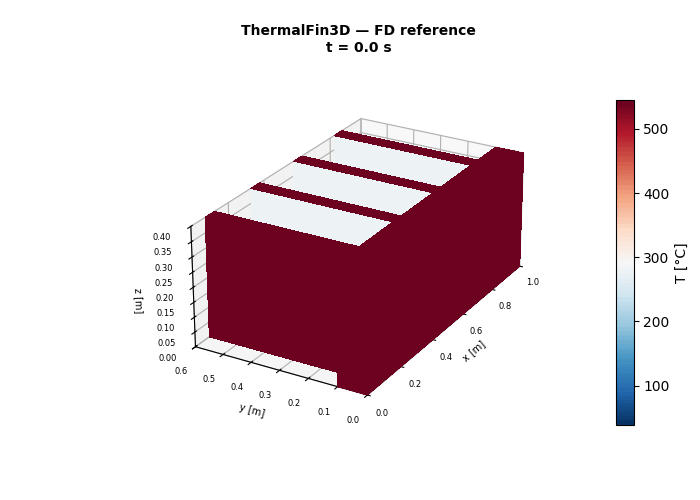

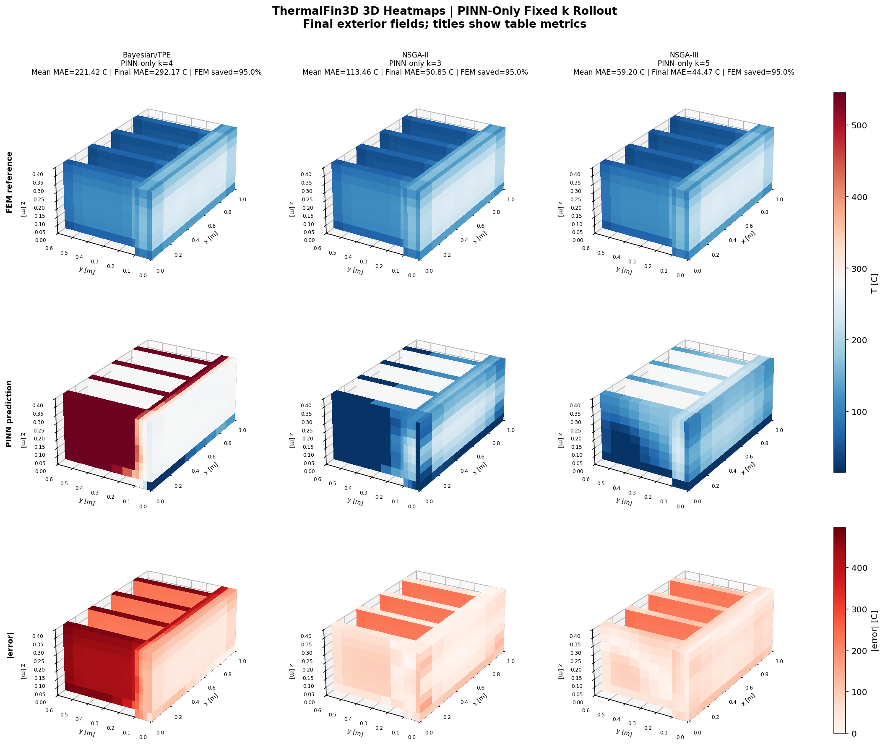
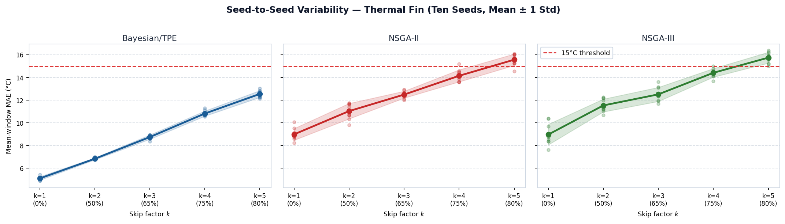
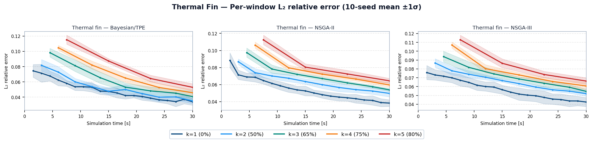
| Architecture | Fourier | k=1 MAE | k=3 MAE | k=5 MAE | Adaptive MAE | L2 (k=1) |
|---|---|---|---|---|---|---|
| Bayesian/TPE | Yes | 9.89 | 10.47 | 11.72 | 11.26 | 0.054 |
| NSGA-II | No | 10.71 | 11.18 | 12.34 | 10.54 | 0.058 |
| NSGA-III | No | 12.04 | 12.88 | 14.12 | 13.21 | 0.065 |
| PINN-only (best) | — | 63–217°C — fails completely without FEM anchoring | — | |||
MAE in °C. Threshold: ≤ 15°C. PINN-only result is from the single best-performing seed.
SummaryOverall Results
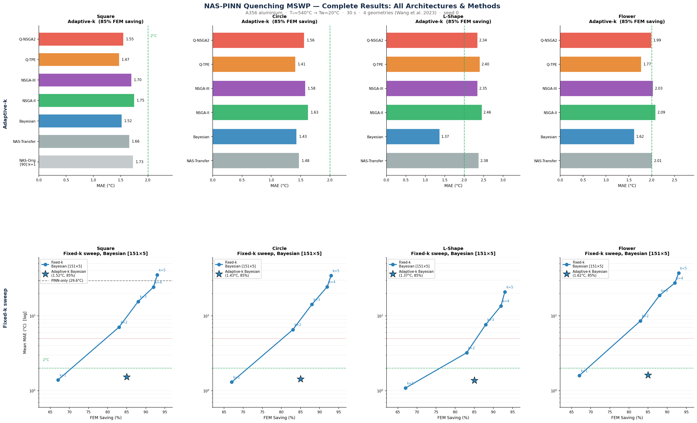
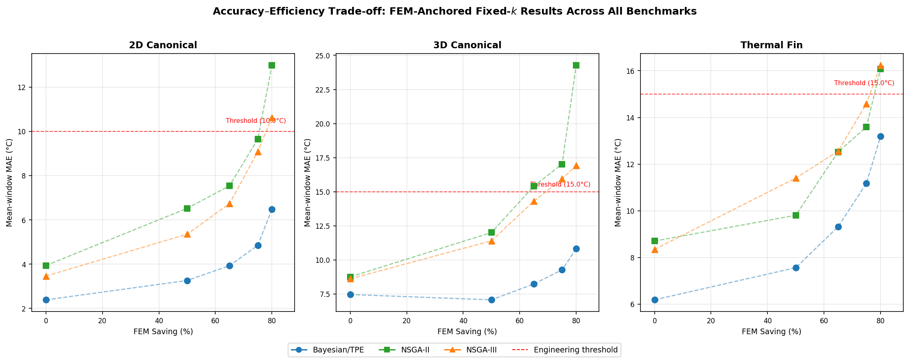
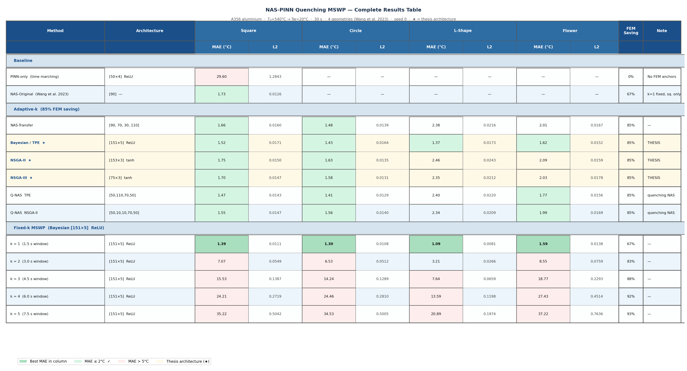
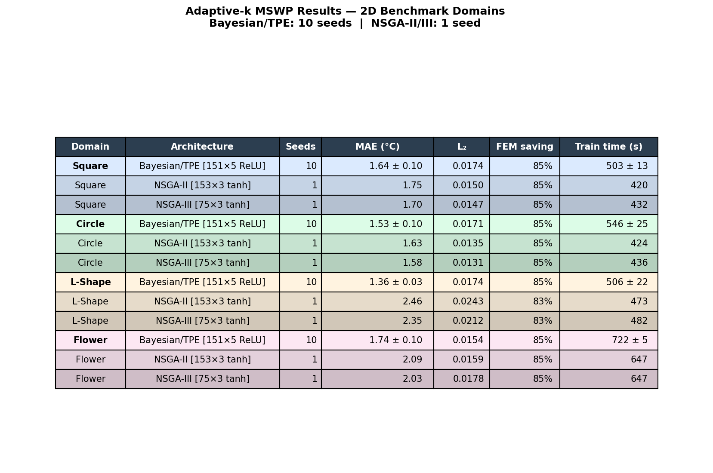
Key FindingsConclusions
- ✓ MSWP reduces FEM cost by up to 85% while keeping mean absolute error below the 15°C engineering acceptance threshold across all ten benchmark geometries in 2D, 3D, and the 3D Thermal Fin. The adaptive-k controller achieves this without any manual tuning of the skip factor.
- ✓ FEM anchoring is not optional. PINN-only rollout without periodic re-anchoring fails on every benchmark with irregular geometry or complex boundary conditions — reaching errors of 60–217°C within a few windows. Periodic FEM anchoring is a structural requirement of the MSWP framework, not a fallback.
- ✓ The adaptive-k controller matches or exceeds the best fixed-k configuration across all benchmarks. It automatically uses FEM more frequently during the steep early transient (low k) and increases the skip factor as the field relaxes (high k), achieving 83–85% FEM saving in 2D and 75–80% in 3D.
- ✓ Bayesian/TPE with Fourier embedding achieves the lowest error on geometrically complex domains (L-Shape, Flower, 3D Cylinder, Thermal Fin). On smooth, regular geometries, all three NAS architectures perform comparably — confirming that geometry-specific NAS adds the most value when the target domain contains local gradient concentration features absent from the NAS search domain.
- ✓ Ten-seed evaluation confirms robustness. The standard deviation of MAE remains below 0.10°C on smooth 2D geometries and below 1.5°C on complex 3D domains. The adaptive-k controller selects identical k-schedules across all ten seeds on domains with regular boundaries, confirming that the schedule reflects the physics of the quench rather than random initialisation.
BibliographyReferences
- [1] — Primary Reference Mortensen, A. et al. (2026). FEM-based thermomechanical simulation of water quenching for A356 aluminium subframes. University of Agder. — Physical parameters, material properties, and engineering motivation for the quenching problem studied in this thesis.
- [2] — NAS-PINN Framework Wang, Y. & Zhong, L. (2024). NAS-PINN: Neural architecture search-guided physics-informed neural network for solving PDEs. Journal of Computational Physics, 496, 112603. doi:10.1016/j.jcp.2023.112603 arXiv:2305.10127